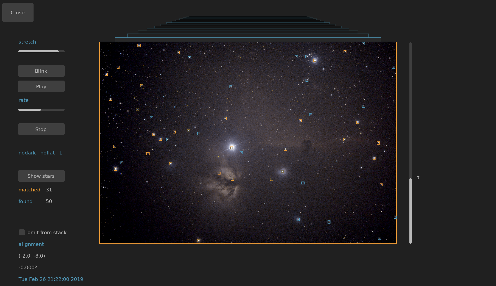

Stack Viewer
View all the subs in sequence, show detected and matched stars.
Close button returns to main display.

This is a thumbnail view of all the images in this observation so far. OSC frames are de-Bayered, but all others (filtered or otherwise) are shown in mono. A vertical scroll bar on the right of the images may be used to traverse the stack, and up and down keyboard arrows also move through the subs.
The Stretch slider applies a variable screen stretch to the display, allowing fainter details to be shown, or supressing them to make the identified stars more visible against the background.
The Play button animates sequence of subs, moving forwards and backwards through the stack sequentially. The rate control changes the speed.
Blink stops any play in progress and toggles between adjacent subs, allowing a visual inspection of the differences.
Stop halts either Play or Toggle modes.
The Show stars buttons indicates detected stars (in blue) and those matched for alignment (orange).
Whilst viewing a particular sub, it may be removed from (or added back to) the stack by the omit from stack checkbox. Any changes made will cause a restack upon returning to the main display screen.
The aligment details show the translation (x, y) and image rotation 0.00º of the current sub, relative to the image centre of the first sub in the stack.